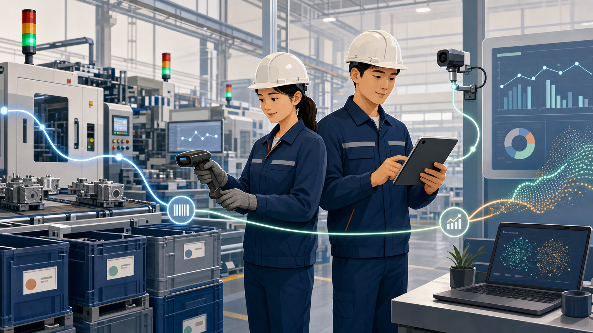

현장 우선
태블릿, 바코드와 짧은 입력 흐름을 중심으로 작업자가 실제로 사용할 수 있는 경험을 설계합니다.
한국 제조 현장의 실제 흐름에서 출발해 다양한 국가, 언어, 업종으로 확장 가능한 오픈소스 제조 실행 시스템을 만듭니다.
WHY OPEN MES KOREA
작업지시, 종이 작업일보, 엑셀, 바코드, 설비와 ERP에 흩어진 데이터를 연결합니다. 공정 진행, 불량 원인과 자재·제품 LOT의 관계를 하나의 추적 가능한 흐름으로 만듭니다.

PRESERVE THE DATA GOLDEN TIME
AI 도입의 첫 단계는 제품 비교가 아니라 지금 발생하는 작업, 품질, LOT와 설비 데이터를 축적하는 일입니다. Open MES Korea로 먼저 수집하고, 실제 데이터가 쌓인 뒤 적합한 분석 도구와 AI를 선택할 수 있습니다.
PostgreSQL, CSV와 API로 이식 가능한 데이터를 유지해 특정 분석 제품에 종속되지 않습니다.
태블릿, 바코드와 짧은 입력 흐름을 중심으로 작업자가 실제로 사용할 수 있는 경험을 설계합니다.
한국어를 기본으로 UI, 문서, 업무 용어와 국가별 규칙을 독립적으로 확장할 수 있게 만듭니다.
감사 로그, 중복 방지, 정정 이력과 명시적인 LOT genealogy로 제조 데이터의 신뢰를 지킵니다.
공통 생산 흐름만 코어에 두고 업종별 기능과 연동은 확장으로 분리해 복잡성과 운영 부담을 낮춥니다.
CORE CAPABILITIES
공통 생산 흐름과 데이터 무결성은 코어가 책임집니다. 특정 공장에만 필요한 기능은 명시적인 확장 지점으로 연결합니다.
작업지시, 공정 시작·종료, 생산수량과 불량 기록
자재 투입부터 제품 LOT까지 양방향 genealogy
생산량, 불량률, 공정시간과 기간별 기본 분석
REST, webhook, MQTT와 표준 제조 이벤트
모든 주요 쓰기의 actor, 변경 이력과 승인 기록
읽기, 제안, 승인과 실행을 분리한 안전한 구조
ARCHITECTURE
작은 공장은 PostgreSQL 중심으로 시작하고, 데이터가 늘어나면 Broadway 수집 계층과 telemetry 저장소를 독립적으로 추가합니다.
MANUFACTURING AI MODULES
AI 기능은 코어에 한꺼번에 넣지 않습니다. 데이터 준비도, ROI와 위험을 검증한 뒤 독립 모듈로 연결합니다.
외관, 치수, 조립과 내부 결함 후보 탐지
센서 기반 품질 예측과 디지털 트윈 검증
공정 변수, 수율과 에너지 최적 조건 제안
AMR·AGV 경로와 비전 피킹 연동
수요, 재고와 APS 작업 우선순위 최적화
설비 이상, 고장 가능성과 점검 시점 제안
보호구, 위험구역과 위험 행동 감지 후보
매뉴얼, 작업표준 검색과 오류 대응 보조
설비 제어, 품질 판정과 안전 경보는 AI가 단독 확정하지 않습니다. 현장 검증, fail-safe, 사람의 승인과 감사 로그를 요구합니다.
ROADMAP
구현과 현장 검증 결과에 따라 순서를 조정합니다. 기능 수보다 실제로 작동하는 생산 흐름을 우선합니다.
LLM-ASSISTED VALIDATION
공장 규모, LOT 요구, 설비 연결, 데이터 준비도와 핵심 병목을 입력하면 LLM이 최소 PoC, 인프라, AI 모듈 우선순위와 위험을 구조적으로 검토하도록 만든 공개 프롬프트입니다.
# Factory context
industry: [your industry]
production_mode: [job shop / batch]
primary_kpi: [defect / downtime]
data_sources:
- work_orders
- lot_history
- equipment_events
validate:
- core_fit
- infrastructure
- data_readiness
- ai_module_priority
- safety_and_risk
output:
- minimum_poc
- 30_60_90_planBUILD WITH US